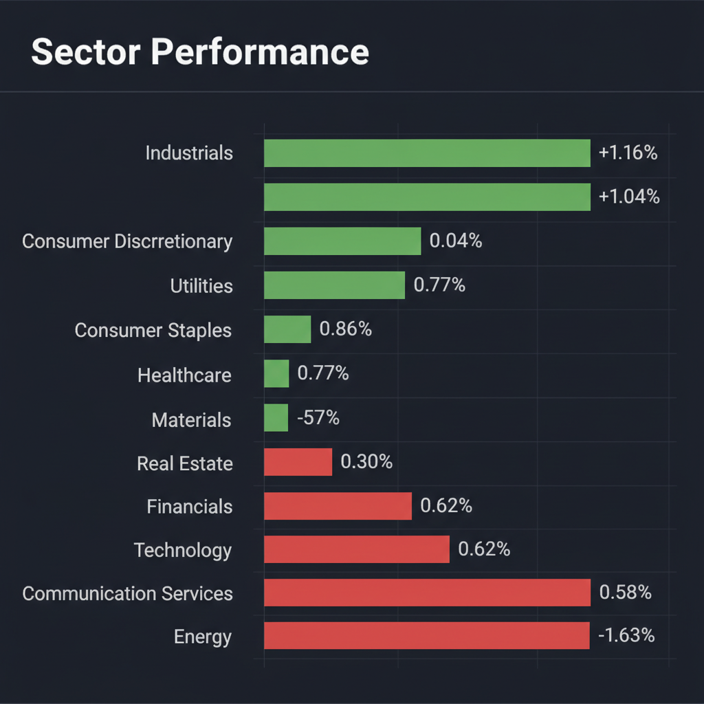
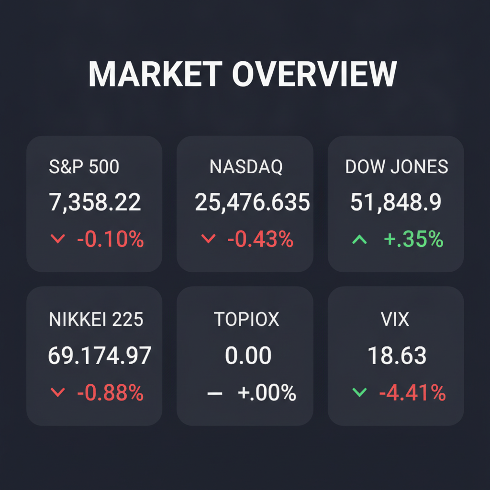

投資チームの合議に基づき、現在の市場環境と投資戦略を以下の通り報告します。
各エージェントがWeb調査結果を踏まえて独立に10段階評価した結果です。平均7以上=強気、4〜6.9=中立、4未満=弱気。
| 銘柄 | ファンダメンタルズアナリスト | テンバガーハンター | マクロエコノミスト | テクニカルストラテジスト | リスクマネージャー | 平均 | 判定 |
| SOUN | 3 幹部売却・赤字継続・競争激化で警戒 | 2 幹部売却と赤字継続、テンバガー候補にはリスク大 | 2 幹部売却と赤字継続で信用リスク大 | 2 幹部売却と赤字継続で警戒 | 2 幹部売却、赤字、競合激化で警戒 |
2.2 | 弱気 |
エージェントが推奨した中小型株について、Google検索で最新情報を調査した結果です。
SOUN (SoundHound AI)に関する投資判断に必要な最新情報は以下の通りです。
1. 企業概要 SoundHound AIは、カリフォルニア州サンタクララに本社を置くアメリカの音楽・音声認識企業で、会話型AIプラットフォームを提供するテクノロジー企業です。 小売、金融サービス、ヘルスケア、自動車、スマートデバイス、レストランなど、多様な業界向けに音声AIソリューションを提供しています。 具体的には、スマートアンサー、スマートオーダリング、ダイナミックドライブスルー、AIエージェントなどの製品を提供しています。 同社のプラットフォーム「Houndify」は、多言語対応で、高速かつ正確な音声認識と応答が特徴です。 時価総額は、2026年6月24日時点で約25.6億ドルから30.1億ドルの範囲です。 業界では独立系の音声AIリーダーとして位置づけられ、自動車メーカー（Hyundai、Stellantis、Hondaなど）や飲食店（Chipotleなど）での採用が拡大しています。
2. 直近の業績・決算情報 2026年第1四半期（1-3月期）決算では、売上高が前年同期比51.7%増の4,419万ドルとなり、市場予想の4,256万ドルを上回りました。 しかし、営業損益は2,267万ドルの赤字に転落し、純損失は2,503万ドルでした。 1株当たり利益（EPS）は-0.06ドルで、これも市場予想の-0.10ドルよりも良い結果でした。 2025年第4四半期には、売上高が前年同期比59.4%増の5,506万ドルに達しています。 累計契約額（バックログ）は約10億ドルから12億ドル規模に達しており、将来の収益を支える見込みです。 経営陣は2025年末までの調整後EBITDA黒字化、または2026年末までにEBITDAベースでの損益分岐を目標としています。
3. 最新ニュース・材料（直近1-2週間） 2026年6月18日、SoundHound AIの最高執行責任者（COO）、最高技術責任者（CTO）、最高科学責任者（CSO）、最高製品責任者（CPO）、最高経営責任者（CEO）など複数の幹部が自社株を売却したことが報じられました。 2026年6月23日には、SOUNのオプション取引が活況となり、総取引量は6.42万枚に達しています。 最近のニュースでは、株価が7.04ドルの抵抗線を下回って3.09%下落しており、年初来で30%下落しているものの、反発の可能性が議論されています。
4. アナリスト評価・目標株価 2026年6月23日時点のアナリストコンセンサスは「強気買い」で、7名が強気買い、1名が中立と評価しています。 アナリストの平均目標株価は14.0ドルで、現在の株価から103.49%上昇する可能性があると予想されています。 D.A.デイビッドソンのアナリストであるギル・ルリア氏は「買い」の投資判断を維持し、目標株価を14ドルに据え置いています。 高値目標は26ドル、安値目標は6ドルと幅広い見解があります。
5. リスク要因 * 競合: GoogleやOpenAIといった資金力のある巨大テック企業がAIエージェント市場に参入しており、競争が激化しています。 また、大手企業が音声技術を自社のエコシステムに組み込むことで、SoundHound AIの技術がコモディティ化するリスクも指摘されています。 * 財務上の懸念: 継続的な赤字と営業損失、キャッシュバーンが続いており、依然として収益化途上にあります。 買収した低利益率事業の統合により、粗利益率が低下する可能性もあります。 株価収益率（PER）はマイナスであり、PBR（株価純資産倍率）は6倍前後から7倍以上と割高感が指摘されています。 * その他のリスク: 特定の主要投資家による全株売却や、幹部による継続的な株式売却が市場のセンチメントに影響を与える可能性があります。 売上の約30%が単一顧客に依存していることや、非経常的なロイヤリティ収入が事業の大部分を占めることもリスク要因です。
6. 株価の最近の動き SoundHound AIの株価はAIブームの中で高いボラティリティを示しています。 2026年3月にはCFOの退任発表を受けて株価が急落しました。 直近の株価は6ドル台で推移しており、52週高値の22.17ドルと比較して低い水準にあります。 2026年年初来では株価は31%下落しています。 テクニカル分析では、短期的には弱気なモメンタムを示す指標も見られます。 オプション取引は活況であり、高いインプライド・ボラティリティ（予想変動率）を示しています。